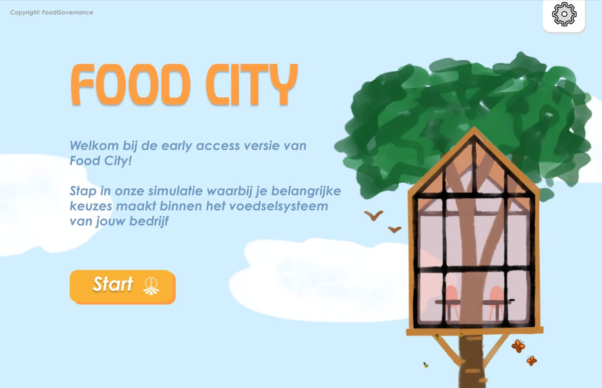
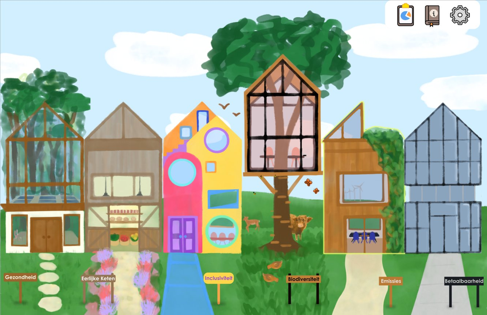

✓
✓
✓
✓
✓
✓
Terug naar de straat →
Jouw beleidsresultaat
Hieronder zie je hoe jouw keuzes zich verhouden tot het bedrijfsdoel.
← Terug naar straat
↩ Opnieuw beginnen
Impact op thema's
🎯 Bedrijfsdoel
📊 Jouw keuze
Overeenkomst met bedrijfsdoel
—
Gekozen kaarten
Scores per thema